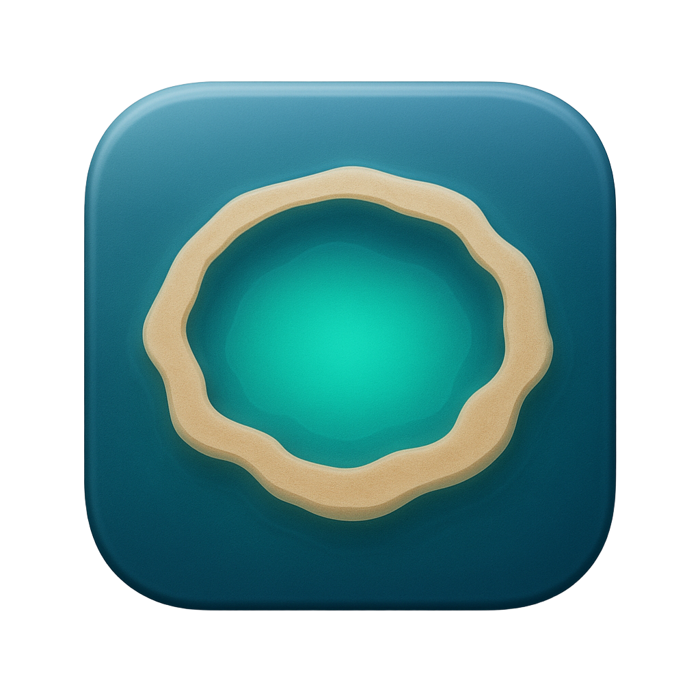
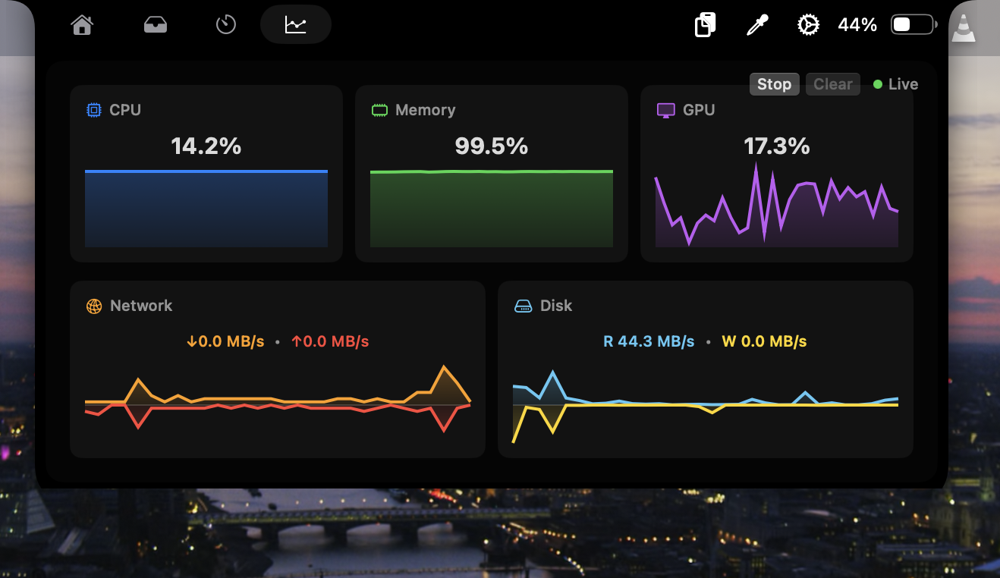
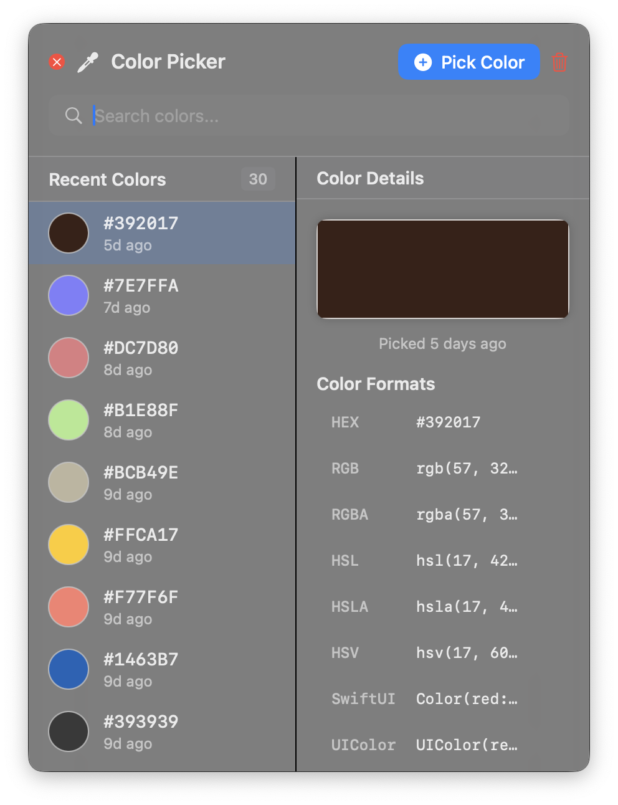
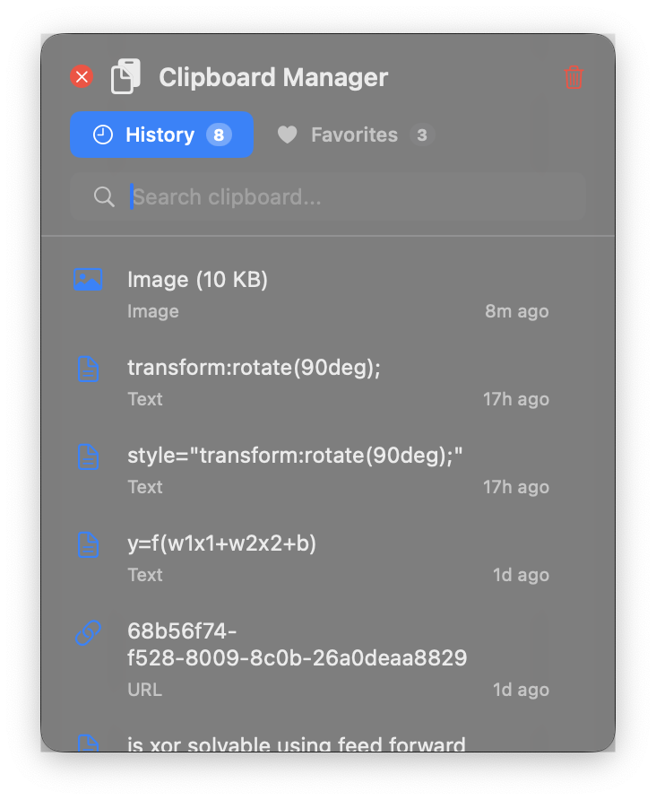

Media

Metamorphia DownloadVersion name: Starry Lite
Metamorphia lives where your eyes already land. It expands from the notch into media controls, system insight, clipboard and shelf tools, lock-screen widgets, and an AI command bar that can use OpenAI, DeepSeek, Kimi, Claude, Gemini, or local models.
Metamorphia is a native macOS notch experience that appears when needed and disappears when the job is done. It gives you fast access to playback, timers, clipboard history, screen context, file sharing, live status, and an AI agent that can read the task in front of you and route work through native tools.
Media

System

Tools

AI Command Bar
Start with the DMG if you just want to run the app. Build from source if you want to inspect, modify, or ship your own fork.
Open Metamorphia-Starry-Lite.dmg, then drag Metamorphia into Applications.
Grant Accessibility for controls, Screen Recording for screen-aware features, Calendar for previews, and Music/Media permissions when prompted.
Hover near the notch, use the configured gesture, or press the command bar hotkey. The default command bar shortcut is Cmd+Shift+Space.
Go to Settings, open AI Command Bar, choose your provider and model, paste the provider key, then Save Key.
Requirements: macOS 14 or later, Xcode 15 or later, and the Metamorphia Xcode scheme.
git clone https://github.com/JohannEndersmith/Metamorphia.git
cd Metamorphia
open Metamorphia.xcodeprojMetamorphia stores provider keys per provider through its AI Command Bar settings. Keys are used only for the selected provider and model. If a key is missing or invalid, the command bar will tell you before the request can complete.
Create a project key at platform.openai.com. In Metamorphia, choose OpenAI and one of the listed OpenAI models, then paste a key that begins with sk-.
Sign in at platform.deepseek.com, create an API key, then choose DeepSeek in Metamorphia. Starry Lite supports deepseek-chat and deepseek-reasoner.
Use platform.moonshot.ai for Moonshot/Kimi international keys. Select Kimi International, then pick a Kimi K2.5 model from the model menu.
Use platform.moonshot.cn for China-region Kimi keys. Select Kimi China when your key is issued for that endpoint.
A polished first GitHub Pages release focused on getting users installed, configured, and productive without reading the source tree first.
Open System Settings, Privacy & Security, then allow Metamorphia. If you built locally, make sure the app is signed by Xcode or opened from Applications.
Cmd+Shift+Space can be intercepted by macOS input-source shortcuts. Change the Metamorphia hotkey or disable the conflicting macOS shortcut.
Confirm the selected provider matches the key issuer. DeepSeek, Kimi International, and Kimi China use different endpoints and keys.
After granting Accessibility or Screen Recording, quit and relaunch Metamorphia so macOS applies the new permission state.
Start playback in Music, Spotify, or another supported player first, then verify Media permissions if macOS asks for them.
Metamorphia is designed for MacBooks with a notch. Some panels can still run, but the main interaction model is optimized for notched displays.